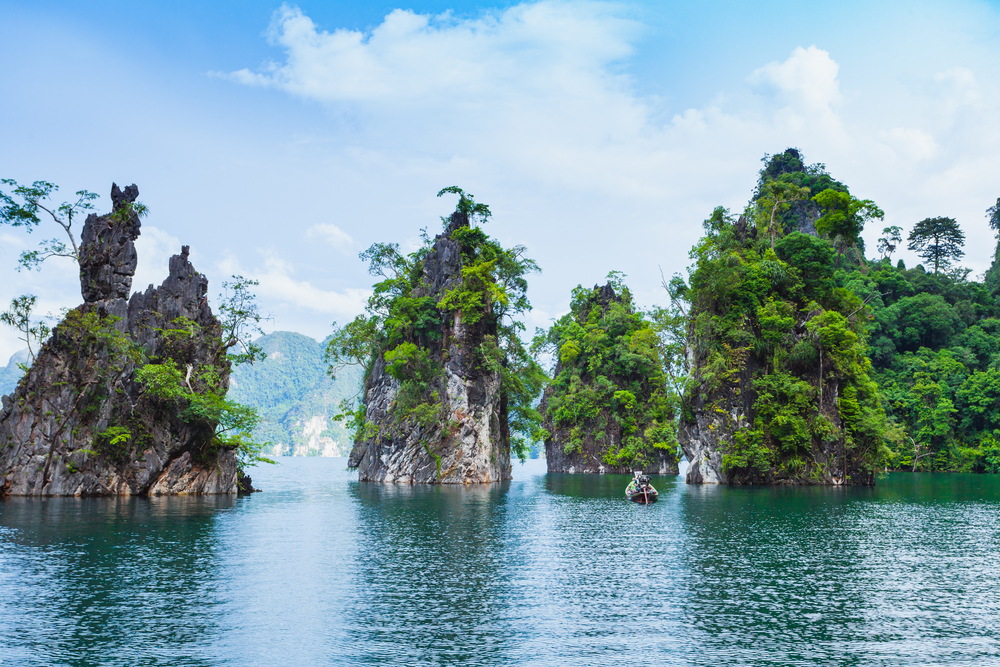
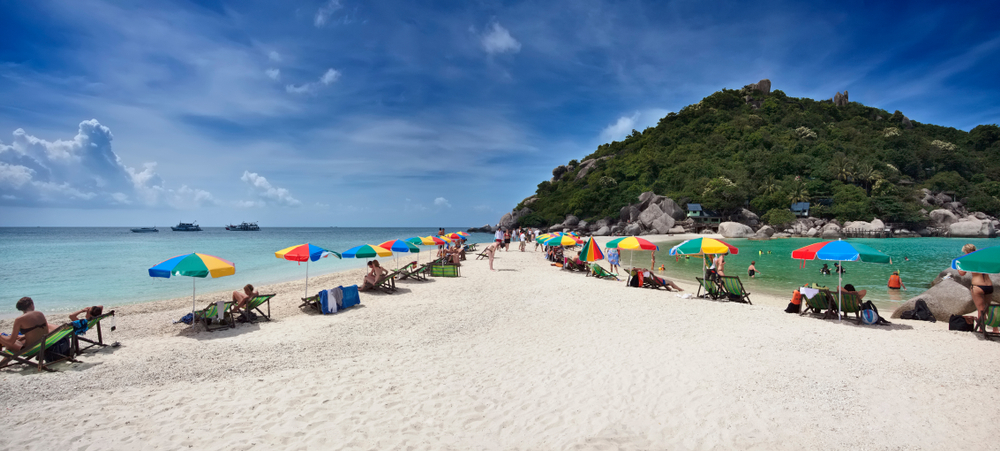
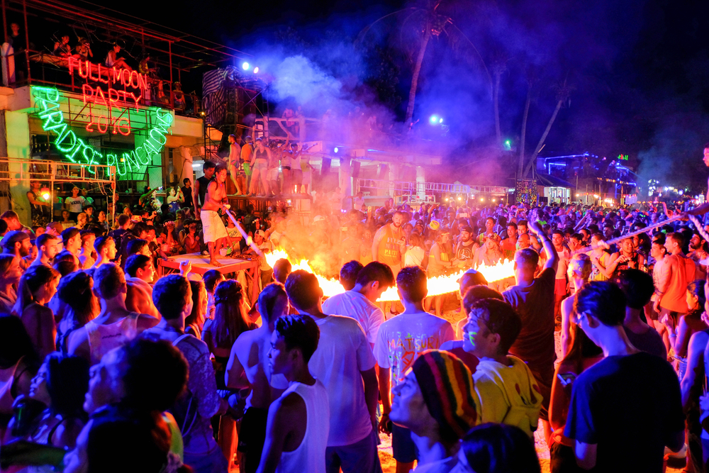

10 ที่เที่ยวสุราษฏร์ธานี ที่สวยสุดๆ
1. เขาสก หรือ เขื่อนรัชชประภา (เขื่อนเชี่ยวหลาน)


เขื่อนรัชชประภาหรือที่เรารู้จักกันในชื่อของเขื่อนเชี่ยวหลาน
สถานที่ท่องเที่ยวยอดฮิตที่สุดในจังหวัดสุราษฏร์ธานี เป็นเขื่อนที่กินอาณาบริเวณกว้างขวางถึง 500 ไร่
มีทัศนียภาพสวยงาม ไปด้วยภูเขาและชะง่อนผาหินปูนที่โอบล้อมอยู่โดยรอบ ไฮไลท์เด็ดของเขื่อนเชี่ยวหลานนั้นก็คือ
หินสามเกลอ หรือที่รู้จักกันในนามของกุ้ยหลินเมืองไทยและกิจกรรมต่างๆ
ไม่ว่าจะเป็นการดำน้ำดูฝูงปลาและปะการังไปจนถึงการพายเรือคายัคก็เป็นกิจกรรมที่ได้รับความนิยมไม่น้อย
นอกจากนี้ที่เขื่อนเชี่ยวหลานยังมีที่พักเก๋ๆ
กลางเขื่อนเอาไว้ให้คุณนอนเอกเขนกและทอดอารมณ์ดื่มดำความสวยงามของที่นี่ ได้อย่างเต็มที่
เรียกได้ว่าหากใครได้แวะเข้ามาที่นี่จะต้องร้องว้าว ไม่อยากกลับออกมาสู่โลกภายนอกเลยทีเดียว
เวลาเปิด – ปิด : ทุกวันตั้งแต่ 9.00 – 16.00 น.
ค่าเข้า : มีหลายระดับราคาตั้งแต่
แพ็คเก็จ 2 วัน 1 คืน ราคาเริ่มต้นที่ 1,000 บาท ขึ้นไป
แพ็คเก็จ 3 วัน 2 คืน ราคาเริ่มต้นที่ 2,000 บาท ขึ้นไป
เวลาเปิด – ปิด : ทุกวันตั้งแต่ 9.00 – 16.00 น.
ค่าเข้า : มีหลายระดับราคาตั้งแต่
แพ็คเก็จ 2 วัน 1 คืน ราคาเริ่มต้นที่ 1,000 บาท ขึ้นไป
แพ็คเก็จ 3 วัน 2 คืน ราคาเริ่มต้นที่ 2,000 บาท ขึ้นไป
2. วัดพระบรมธาตุไชยาราชวรวิหาร


สิ่งศักดิ์สิทธิ์คู่บ้านคู่เมืองที่ขาดไม่ได้เมื่อได้มาท่องเที่ยวที่จังหวัดสุราษฏร์ธานี
วัดพระบรมธาตุไชยาวรวิหารแห่งนี้มีความงดงามของสถาปัตยกรรมในสมัยกรุงศรีวิชัยที่สวยงามและสมบูรณ์แบบที่สุดจนได้รับการยกย่องให้เป็นโบราณสถานที่สำคัญแห่งหนึ่งในประเทศ
ไฮไลท์เด็ดของวัดพระบรมธาตุไชยาฯ แห่งนี้ก็คือ
พระพุทธรูปที่สลักเสลาขึ้นจากศิลาทรายสีแดงที่มีความงดงามและเป็นเอกลักษณ์ของฝีมือช่างไชยาในสมัยนั้น
อีกทั้งยังมีพิพิธภัณฑ์สถานที่ได้รวบรวมโบราณวัตถุสมัยกรุงศรีวิชัยที่ขุดพ้นในบริเวณโดยรอบวัดแห่งเอาไว้ให้คุณได้เข้าไปเยี่ยมชม
เวลาเปิด – ปิด : ทุกวันตั้งแต่ 8.00 – 16.00 น.
ค่าเข้า : คนไทย 10 บาท ต่างชาติ 30 บาท
เวลาเปิด – ปิด : ทุกวันตั้งแต่ 8.00 – 16.00 น.
ค่าเข้า : คนไทย 10 บาท ต่างชาติ 30 บาท
3. เกาะนางยวน


เมื่อมาถึงจังหวัดสุราษฏร์ธานี
หากไม่ได้ไปเที่ยวทะเลเลยก็ดูเหมือนจะยังมาไม่ถึง เกาะนางยวนนั้นเป็นเกาะเล็กๆอยู่ใกล้ๆ
กับเขาเต่าที่ความสวยงามของวิวนั้นไม่เล็กเหมือนอาณาบริเวณโดยรอบเกาะเลย
ความพิเศษของเกาะนางยวนก็คือจะเป็นเกาะเล็กๆ 3
เกาะที่ถูกเชื่อมโยงถึงกันด้วยสันทรายตรงกลางที่เป็นเอกลักษณ์ 1 เดียวในโลก
เมื่อมองจากจุดชมวิวลงไปด้านล่างคุณจะได้เห็นสุดยอดวิวที่มีความสวยงามที่ได้รับการยกย่องให้เป็น 1 ใน 10
เกาะที่สวยที่สุดติดอันดับโลกเลยทีเดียว นับเป็นสถานที่ท่องเที่ยวที่น่าภาคภูมิใจและไม่ควรพลาดเลยจริงๆ
เวลาเปิด – ปิด : ทุกวัน
ค่าเข้า : มีค่าโดยสารเรือจากท่าเรือเกาะเต่าคนละ 350 บาท
เวลาเปิด – ปิด : ทุกวัน
ค่าเข้า : มีค่าโดยสารเรือจากท่าเรือเกาะเต่าคนละ 350 บาท
4. สวนโมกข์พลาราม


อีกหนึ่งความภาคภูมิใจของพุทธศาสนิกชนที่คุณไม่ควรพลาด
สวนโมกพลารามหรือสวกโมกข์นั้นถูกก่อตั้งโดยท่านพุทธทาสภิกขุ
พระอาจารย์ที่มีความสำคัญมากที่สุดองค์หนี่งในวงการพระพุทธศาสนา
ภายในสวนนั้นจะโอบล้อมไปด้วยแมกไม้ร่มรื่นให้ความรู้สึกเย็นสบาย
อีกทั้งยังมีกิจกรรมปฏิบัติธรรมไว้รองรับสำหรับผู้ที่มีใจรักและศรัทธาในพุทธศาสนา
สำหรับจิตใจที่เหนื่อยล้าจากความทุกข์และการทำงานในปัจจุบัน
เมื่อได้มาเยี่ยมชมและพูดคุยสนทนาธรรมกับเหล่าผู้ปฏิบัติธรรมแล้วก็จะได้รับข้อคิดและแรงใจดีๆ
กลับไปพร้อมลุยกับทุกอุปสรรคที่ต้องเผชิญ
เวลาเปิด – ปิด : ทุกวันตั้งแต่ 6.00 – 18.00 น.
ค่าเข้า : ฟรี
ค่าเข้า : ฟรี
5. อุทยานธรรมเขานาในหลวง
อีกหนึ่งในแลนด์มาร์คสำคัญที่พลาดไม่ได้เมื่อมาท่องเที่ยวจังหวัดสุราษฏร์ธานี
เป็นพุทธสถานที่ได้รับความนิยมทั้งในหมู่นักท่องเที่ยวและชาวพื้นที่
ด้วยความสวยงามที่เป็นเอกลักษณ์ไม่ซ้ำใครของสถาปัตยกรรม เช่น ซุ้มประตูพุทธวดี 9 ยอด
ที่เมื่อพระอาทิตย์ขึ้นและตก
แสงสีทองเรืองรองรองนั้นจะลอดผ่านซุ้มประตูโค้งมนออกมาอย่างสวยงามประน่าทับใจ
หรือเจดีย์ลอยฟ้าที่บรรจุพระบรมสารีริกธาตุที่ตั้งเด่นเป็นสง่าก็ดูสวยแปลกตาน่ามองไม่แพ้กัน
เวลาเปิด – ปิด : ทุกวันตั้งแต่ 6.30 – 18.30 น.
ค่าเข้า : ฟรี
เวลาเปิด – ปิด : ทุกวันตั้งแต่ 6.30 – 18.30 น.
ค่าเข้า : ฟรี
6. ตลาดน้ำประชารัฐ บางใบไม้
เป็นสถานที่ท่องเที่ยวแห่งใหม่ที่กำลังได้รับความนิยมสูงสุดในจังหวัดสุราษฏร์ธานี
ตลาดน้ำประชารัฐนั้นเกิดขึ้นจากความร่วมแรงร่วมใจของชาวบ้านบางใบไม้ ซึ่งเป็นชุมชนเล็กๆ
ที่มีเสน่ห์และความน่าสนใจไม่แพ้สถานที่ท่องเที่ยวอื่นๆ เลย คุณสามารถเดินเล่นชิลๆ
ดื่มด่ำไปกับบรรยากาศคึกคักของชาวบ้าน แวะชิมอาหารพื้นบ้านและช้อปปิ้งผลิตภัณฑ์ของชุมชนแห่งนี้ได้
นอกจากนี้ยังมีกิจกรรมล่องเรือชมความงดงามและเงียบสงบของแม่น้ำร้อยสาย
แม่น้ำสายสำคัญที่หล่อเลี้ยงชุมชนละแวกนี้ นับเป็นอีกหนึ่งสถานที่ท่องเที่ยวน่าสนใจ
ที่เราอยากให้คุณแวะมาเยี่ยมเยียน
เวลาเปิด – ปิด : อาทิตย์ 9.00 – 15.00 น.
ค่าเข้า : ฟรี
เวลาเปิด – ปิด : อาทิตย์ 9.00 – 15.00 น.
ค่าเข้า : ฟรี
7. ถ้ำน้ำตกผาแดง
ถ้ำน้ำตกผาแดงนั้นเป็นแหล่งท่องเที่ยวที่สำคัญ
ความน่าทึ่งของของธรรมชาติแห่งนี้ที่ภายในถ้ำเราจะได้พบหินงอกหินย้อยมหัศจรรย์ธรรมชาติที่มีความสวยงามแปลกตา
เมื่อเราเดินลอดถ้ำเข้าไปจะพบกับน้ำตกผาแดงที่มีสวยสะดุดตา
ราวกับหลุดเข้าไปในอีกโลกหนึ่งที่เราไม่เคยพานพบมาก่อนเลย ไฮไลท์เด็ดๆ ของถ้ำน้ำตกผาแดงก็คือ
หินงอกหินย้อยสีแดงขนาดใหญ่ลักษณะโค้งมน มีรูปร่างคล้ายผ้าม่านที่คุณไม่ควรพลาด
เรียกได้ว่าน้ำตกถ้ำผาแดงนั้นเป็นสถานที่ท่องเที่ยวที่น่าตื่นตาตื่นใจ
ที่คุณต้องตกใจจนอ้าปากค้างกับความสวยงามของธรรมชาติเลยทีเดียว
เวลาเปิด – ปิด : เปิดเฉพาะวันหยุดราชการ ตั้งแต่เวลา 8.30 – 15.30 น.
ค่าเข้า : ตามแต่ตกลงกับเจ้าหน้าที่
8. สะพานแขวน วัดเขาพัง
สะพานแขวนเขาพังหรือสะพานเขาเทพพิทักษ์เป็นอีกหนึ่งแลนด์มาร์คที่เมื่อมาถึงเขื่อนเชี่ยวหลานแล้วคุณต้องไม่พลาด
เป็นสะพานแขวนขนาดใหญ่ทอดตัวยาวกว่า 120 เมตร
ตัดข้ามคลองสะแพงและหมู่แมกไม้น้อยใหญ่ที่ร่มรื่นและเขียวขจี
บรรยากาศโดยรอบนั้นเป็นทิวเขาเทพพิทักษ์ที่เมื่อเรามองลอดผ่านสะพานแขวนแล้วจะเห็นเป็นรูปร่างคล้ายหัวใจสวยงามแปลกตามาก
นับเป็นอีกจุกที่ควรต้องมาถ่ายรูปเก็บความประทับใจ เอาไว้โพสต์ลงไอจีเก๋ๆ ให้เพื่อนทุกคนอิจฉาจนตาร้อน
เวลาเปิด – ปิด : ทุกวัน
ค่าเข้า : ฟรี
เวลาเปิด – ปิด : ทุกวัน
ค่าเข้า : ฟรี
9. เกาะเต่า
เกาะเต่านั้นเป็นอีกหนึ่งความภาคภูมิใจของจังหวัดสุราษฏร์ธานี เป็นเกาะเล็กๆ
ที่มีลักษณะคล้ายเมล็ดถั่วล่องลอยอยู่ใจกลางทะเล มีชายหาดมากถึง 11
แห่งไว้รอต้อนรับนักท่องเที่ยวทุกไลฟ์สไตล์เช่น หาดทรายรี เหมาะสมกับนักท่องเที่ยวที่ชื่นชอบการกินดื่ม
พบปะสังสรรค์ หาดฟรีด้อม เหมาะสมกับนักท่องเที่ยวสายชิลที่ต้องการความเงียบสงบและเป็นส่วนตัว
เกาะเต่านั้นเป็นเกาะที่ได้ชื่อว่ามีโลกใต้น้ำที่สวยที่สุดในประเทศไทย
เหมาะกับกิจกรรมดำน้ำทั้งลึกและตื้น
มีสัตว์ทะเลน้อยใหญ่และปะการังสวยงามสมบูรณ์แบบมากที่สุดที่ใครเห็นเป็นต้องทึ่ง
เวลาเปิด – ปิด : ทุกวัน
ค่าเข้า : มีค่าโดยสารเรือข้ามเกาะหลายระดับราคา เริ่มตั้งแต่ 450 – 600 บาท
เวลาเปิด – ปิด : ทุกวัน
ค่าเข้า : มีค่าโดยสารเรือข้ามเกาะหลายระดับราคา เริ่มตั้งแต่ 450 – 600 บาท
10. เกาะพงัน

ไฮไลท์เด็ดที่เราเก็บไว้ท้ายสุดสำหรับสถานที่ท่องเที่ยวสุดน่าทึ่งในจังหวัดสุราษฏร์ธานีก็คือ
เกาะพะงัน สถานที่ท่องเที่ยวยอดฮิตติดอันดับโลกแห่งนี้
ด้วยความห่างไกลของเกาะที่ต้องใช้เวลาเดินทางนานนับชั่วโมง
ทำให้เกาะพงันนั้นยังมีธรรมชาติที่สวยงามอุดมสมบูรณ์และเงียบสงบเพราะแทบไม่ได้รับการรบกวนจากมนุษย์มากนัก
ไฮไลท์เด็ดที่ดึงดูดนักท่องเที่ยวให้ดั้นด้นเดินทางมาถึงเกาะพะงันแห่งนี้ก็คือการเข้าร่วมฟูลมูนปาร์ตี้
โดยฟูลมูนปาร์ตี้นั้นจะจัดขึ้นเดือนละ 2 ครั้งในคืนพระจันทร์เต็มดวง
โดยชาวบ้านจะเนรมิตรให้หาดริ้นเป็นสถานที่แฮงเอ้าท์ กิน
ดื่มสุดมันที่เราจะได้พบปะสังสรรค์กับนักท่องเที่ยวทั่วโลก นับว่าเป็นอีกหนึ่งกิจกรรมน่าสนใจ
ที่จะเปิดโลกทัศน์ของคุณให้กว้างไกลมากขึ้นกว่าเดิม
เวลาเปิด – ปิด : แล้วแต่กำหนดการแต่ละเดือน
ค่าเข้า : มีค่าโดยสารเรือหลายระดับราคา ขึ้นอยู่กับระยะทางตั้งแต่ 120 – 960 บาท
เวลาเปิด – ปิด : แล้วแต่กำหนดการแต่ละเดือน
ค่าเข้า : มีค่าโดยสารเรือหลายระดับราคา ขึ้นอยู่กับระยะทางตั้งแต่ 120 – 960 บาท